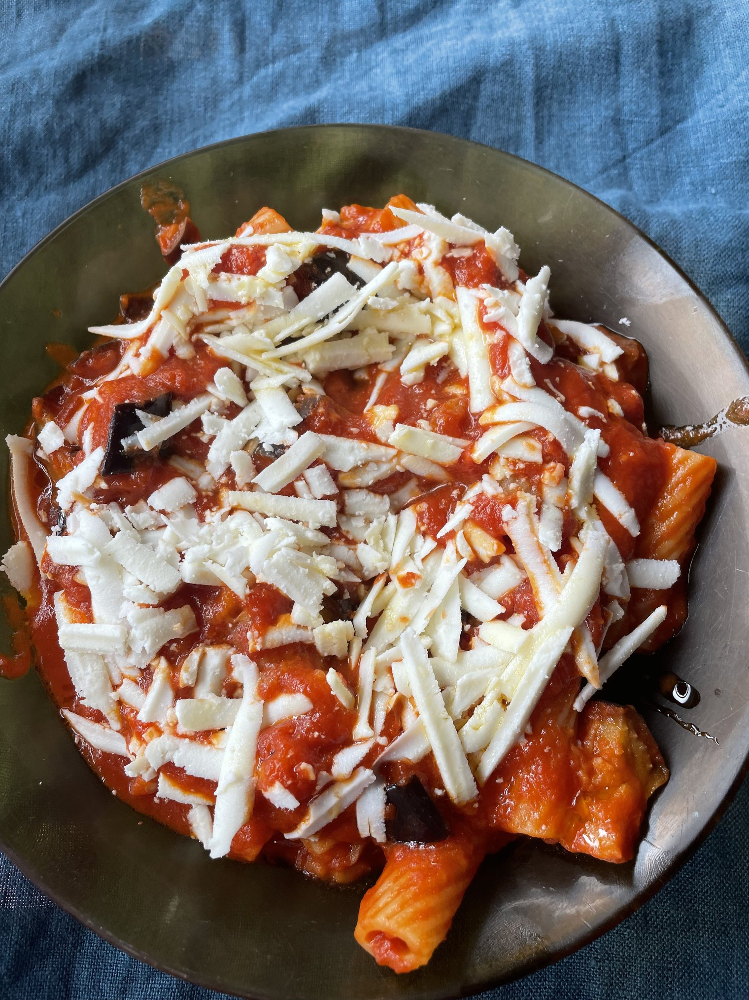

Pasta alla siciliana
Ingredients
×
- melanzane
- sugo
- cacioricotta

Preparazione
Passo 1
friggere le melanzane tagliate a cuadretini e preparare il sugo.
Passo 2
Mettere nel sugo le melazane fritte e continuare a cuocere.
Passo 3
Cuocere i tortiglioni.
Passo 4
Servire con cacioricotta.